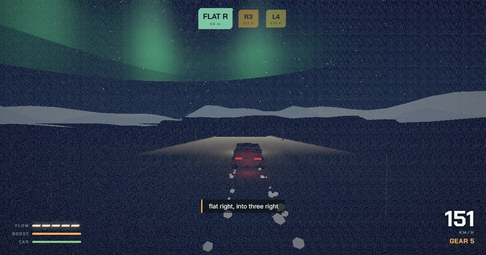

Play
Browser game · Engine from scratch
Overcrest
An endless rally roguelike. A road that never ends, through twelve countries and one place that is not a country; a codriver who calls every corner; waystations where the car becomes something stranger. Everything under it is hand-built: physics, road generator, terrain, audio and music.
- A four-corner physics engine with per-wheel loads, a tyre law per surface and real suspension, regression-tested by a robot driver against the speeds the car promises.
- Pace notes are a contract. Corners are sized from the car's own gearbox, so “three right” means the same thing on gravel, snow or ice.
- The world is one analytic function of the road: tunnels, bridges, dam crossings and overpasses emerge from the terrain field. 23 named special events.
- An adaptive soundtrack arranged live in song form, 139 achievements, and shareable seeds: the same seed is the same journey, forever.